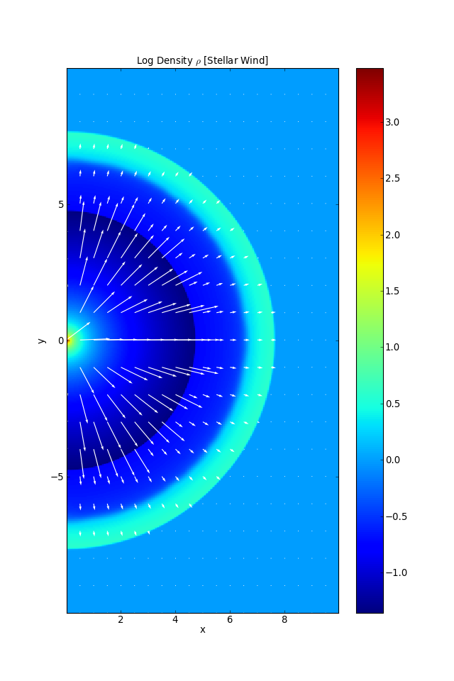
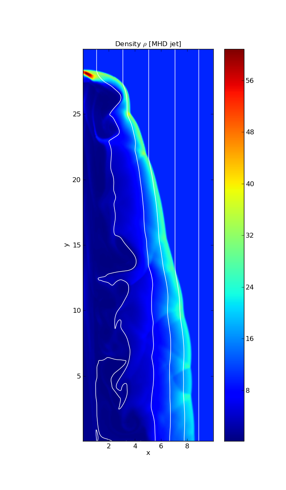

Examples¶
1. Sod¶
import os import sys from numpy import * from matplotlib.pyplot import * import pyPLUTO as pp plutodir = os.environ['PLUTO_DIR'] wdir = plutodir+'/Test_Problems/HD/Sod/' nlinf = pp.nlast_info(w_dir=wdir) D = pp.pload(nlinf['nlast'],w_dir=wdir) # Loading the data into a pload object D. f1 = figure() ax1 = f1.add_subplot(111) plot(D.x1,D.rho,'r',D.x1,D.prs,'k',D.x1,D.vx1,'g') xlabel(r'x') ylabel(r'$\rho$ [red], P [black], $V_{\rm x}$ [green]') title(r'Sod shock Tube test') axis([0.0,1.0,-0.2,1.2]) savefig('sod_1.pdf') show()
{kind=link}
2. Rayleigh-Taylor¶
import os import sys from numpy import * from matplotlib.pyplot import * import pyPLUTO as pp plutodir = os.environ['PLUTO_DIR'] wdir = plutodir+'/Test_Problems/HD/Rayleigh_Taylor/' D0 = pp.pload(0,w_dir=wdir) D1 = pp.pload(1,w_dir=wdir) # Loading the data into a pload object D. D2 = pp.pload(2,w_dir=wdir) ## SMART WAY## I = pp.Image() I.multi_disp(D0.rho,D1.rho,D2.rho,x1=D0.x1,x2=D0.x2,Ncols=3,label1=3*['x'], label2=3*['y'],title=[r'$\tau=0$',r'$\tau=1$',r'$\tau=2$'], cbar=(True,'vertical','each'),figsize=[12,7]) ##BRUTE FORCE WAY## ## f1 = figure(figsize=[12,7]) ## ax1 = f1.add_subplot(131) ## pcolormesh(D0.x1,D0.x2,D0.rho.T) ## colorbar() ## ax1.set_xlabel(r'x') ## ax1.set_ylabel(r'y') ## ax1.axis([-0.5,0.5,0.0,4.0]) ## ax1.set_aspect('equal') ## ax1.set_title(r'$\tau$ = 0') ## ax2 = f1.add_subplot(132) ## pcolormesh(D1.x1,D1.x2,D1.rho.T) ## colorbar() ## ax2.set_xlabel(r'x') ## ax2.set_ylabel(r'y') ## ax2.axis([-0.5,0.5,0.0,4.0]) ## ax2.set_aspect('equal') ## ax2.set_title(r'$\tau$ = 1') ## ax3 = f1.add_subplot(133) ## pcolormesh(D2.x1,D2.x2,D2.rho.T) ## colorbar() ## ax3.set_xlabel(r'x') ## ax3.set_ylabel(r'y') ## ax3.axis([-0.5,0.5,0.0,4.0]) ## ax3.set_aspect('equal') ## ax3.set_title(r'$\tau$ = 2') savefig('RayleighTaylor_multi.png') show()
{kind=link}
3. Stellar-Wind¶
import os import sys from numpy import * from matplotlib.pyplot import * import pyPLUTO as pp #To run this example it is suggested to get data in 2D using pluto_01.ini and set the data in flt datatype instead of dbl.h5 plutodir = os.environ['PLUTO_DIR'] wdir = plutodir+'/Test_Problems/HD/Stellar_Wind/' nlinf = pp.nlast_info(w_dir=wdir,datatype='float') D = pp.pload(nlinf['nlast'],w_dir=wdir,datatype='float') # Loading the data into a pload object D. I = pp.Image() I.pldisplay(D, log10(D.rho),x1=D.x1,x2=D.x2,label1='x',label2='y', title=r'Log Density $\rho$ [Stellar Wind]',cbar=(True,'vertical'),figsize=[8,12]) # Code to plot arrows. --> Spacing between the arrow can be adjusted by modifying the newdims tuple of conrid function. T = pp.Tools() newdims = 2*(20,) Xmesh, Ymesh = meshgrid(D.x1.T,D.x2.T) xcong = T.congrid(Xmesh,newdims,method='linear') ycong = T.congrid(Ymesh,newdims,method='linear') velxcong = T.congrid(D.vx1.T,newdims,method='linear') velycong = T.congrid(D.vx2.T,newdims,method='linear') gca().quiver(xcong, ycong, velxcong, velycong,color='w') savefig('stellar_wind_1.png') show()
4. Orzag-Tang¶
import os import sys from numpy import * from matplotlib.pyplot import * import pyPLUTO as pp plutodir = os.environ['PLUTO_DIR'] wdir = plutodir+'/Test_Problems/MHD/Orszag_Tang/' nlinf = pp.nlast_info(w_dir=wdir) D = pp.pload(nlinf['nlast'],w_dir=wdir) # Loading the data into a pload object D. I = pp.Image() I.pldisplay(D, D.rho,x1=D.x1,x2=D.x2,label1='x',label2='y',title=r'Density $\rho$ [Orszag Tang test]',cbar=(True,'vertical')) savefig('orszag_tang_1.png') # Only to be saved as either .png or .jpg show()
{kind=link}
5. Axisymmetric-Jet¶
import os import sys from numpy import * from matplotlib.pyplot import * import pyPLUTO as pp plutodir = os.environ['PLUTO_DIR'] wdir = plutodir+'/Test_Problems/MHD/Jet/' nlinf = pp.nlast_info(w_dir=wdir) D = pp.pload(nlinf['nlast'],w_dir=wdir) # Loading the data into a pload object D. I = pp.Image() I.pldisplay(D, D.rho,x1=D.x1,x2=D.x2,label1='x',label2='y', title=r'Density $\rho$ [MHD jet]',cbar=(True,'vertical'),figsize=[7,12]) # Code to plot field lines. Requires 2 arrays xarr and yarr as # the starting point of integration i.e. x and y co-ordinate of the field point. I.myfieldlines(D,linspace(D.x1.min(),D.x1.max(),10),linspace(D.x2.min(),D.x2.min(),10), colors='w',ls='-',lw=1.5) savefig('jet_final.png') # Only to be saved as either .png or .jpg show()
6. Spherical-Disc : FARGO.¶
import os import sys from numpy import * from matplotlib.pyplot import * import pyPLUTO as pp plutodir = os.environ['PLUTO_DIR'] wdir = plutodir+'/Test_Problems/MHD/FARGO/Spherical_Disk/' nlinf = pp.nlast_info(w_dir=wdir,datatype='vtk') D = pp.pload(nlinf['nlast'],w_dir=wdir,datatype='vtk') # Loading the data into a pload object D. I = pp.Image() f1 = figure(figsize=[15,6],num=1) ax1=f1.add_subplot(122) I.pltSphData(D,w_dir=wdir,datatype='vtk',plvar='bx1',logvar=False,rphi=False,x3cut=96) colorbar(orientation='horizontal') ax1.set_xlabel(r'Radius') ax1.set_ylabel(r'Height') ax1.set_title(r'Magnetic field $B_{\rm x}$') ax2=f1.add_subplot(121) I.pltSphData(D,w_dir=wdir,datatype='vtk',plvar='rho',logvar=True,rphi=True,x2cut=24) colorbar(orientation='vertical') ax2.set_xlabel(r'x') ax2.set_ylabel(r'y') ax2.set_title(r'Log $\rho$') # Code to plot arrows. --> Spacing between the arrow can be adjusted by # modifying the newdims tuple of conrid function. T = pp.Tools() newdims = 2*(20,) R,Z,SphData = I.getSphData(D,w_dir=wdir,datatype='vtk',rphi=True,x2cut=24) xcong = T.congrid(R,newdims,method='linear') ycong = T.congrid(Z,newdims,method='linear') vel1 = SphData['v1c'] vel2 = SphData['v3c'] xveccong = T.congrid(vel1,newdims,method='linear') yveccong = T.congrid(vel2,newdims,method='linear') normVp = sqrt(xveccong**2 + yveccong**2) xveccong = xveccong/normVp yveccong = yveccong/normVp ax2.quiver(xcong, ycong, xveccong, yveccong,color='w') show()
{kind=link}
7. Flow Past Cylinder : AMR¶
import os import matplotlib.pyplot as plt import pyPLUTO as pp import numpy as np I = pp.Image() plutodir = os.environ['PLUTO_DIR'] wdir = plutodir+'/Test_Problems/HD/Viscosity/Flow_Past_Cylinder/' try: D = pp.pload(10,datatype='hdf5',level=3, w_dir=wdir) except IndexError: print 'data.0010.hdf5 not found .. Loading data.0000.hdf5 at level 0' D = pp.pload(0,datatype='hdf5',w_dir=wdir) #Plot 2D AMR R-Phi Polar Data on Cartesian X-Y Plane. I.pldisplay(D, D.rho, x1=D.x1, x2=D.x2, polar=[True, True], fignum=1, cbar=[True, 'horizontal'],figsize=[8,8], label1='X', label2='Y',title=r'Density [$\rho$]') ax1 = plt.gca() ax1.axis([-10, 50,-20.0, 20.0]) #Using the OplotBox routine to overplot sublevels. I.oplotbox(D.AMRLevel,lrange=[0,3],geom=D.geometry) plt.savefig('amr_flowcyc.png')
{kind=link}